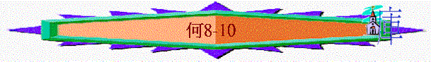

|
非人間的愛情－－怎能捨棄以色列 |
|||||||
|
怎能捨棄淫婦 |
怎能捨棄以色列 |
||||||
|
１－３ |
４－１４ |
||||||
|
去娶淫婦 |
追討淫行 |
再愛淫婦 |
以色列 的罪行 |
以色列 的被罰 |
耶和華 的無奈 |
耶和華 的審判 |
耶和華 的眷愛 |
ＩＩ．怎能捨棄以色列（４－１４）
Ｄ
．耶和華的審判（８－１０）１．審判的宣告（８：１－３）
「你用口吹角罷，敵人如鷹來攻打耶和華的家．．．．」（ｖ１）
ａ．其時間：如鷹--快
ｂ．其目標：耶和華的家
ｃ．其慘況：如鷹吃獵物
ｄ．其原因：
i．違背神的約,律法
ii．自己丟棄良善,福份
ｅ．其意義：希望人回轉
２．審判的內容（８：４－１０：１５）
ａ．審判他們－－隨己意而行（８：４－１３）
i．在政治上
（１）任意：立王不由神
「他們立君王卻不由我．．．．」（ｖ４）
（２）結果：神不認
「．．．．他們立首領，我卻」（ｖ４）
ii．在宗教上
（１）任意：製造偶像
「他們用金銀為自己製造偶像．．．．」（ｖ４）
（２）審判：必被打碎
「．．．．撒瑪利亞的牛犢，必被打碎．．．．」（ｖ６）
iii．在外交上
（１）任意：投奔亞述
「他們投奔亞述如同獨行的野驢．．．．」（ｖ９）
（２）審判：終被吞吃
「以色列被吞吃，現今在列國中，好像人不喜悅的器皿．．」（ｖ８）
「．．．．他們因君王和首領所加的重擔，日漸衰微」（ｖ１０）
11
iv．在事奉上
（１）任意：增添祭壇_
「以法蓮增添祭壇取罪，因此祭壇使他犯罪」（ｖ１１）
「我為他寫了律法萬條，他卻此為與他毫無關涉」（ｖ１２）
（２）審判：神不悅納
「至於獻給我的祭物，他們自食其肉，耶和華卻不悅納他們」（ｖ１３）
＊小結：任意－－>神必追討
「現在必記念他們的罪孽，追討他們的罪惡，他們必歸回埃及」（ｖ１３）
ｂ．審判他們－－忘記他的主（８：１４）
i．忘主：忘記主,專顧己
「以色列忘記造他的主，建造宮殿，猶大多造堅固城．．．．」（ｖ１４）
ii．審判：神毀滅
「．．．．我卻要降火焚燒他的城邑，燒滅其中的宮殿」（ｖ１４）
ｃ．審判他們－－行淫離棄神（９－１０：１１）
「．．．．因為你行邪淫離棄你的神．．．．」（９：１，１０ １０：１，５）
＊特點及審判（針對性）
i．歡喜快樂
（１）特點
「以色列阿，不要像外邦人歡喜快樂．．．．在各穀場上如妓女喜愛賞賜」
（９：１）
（２）審判：
－－豐盛之地：「穀場和酒醡，都不夠以色列人使用，新酒也必缺乏，他們 必不得住耶和華的地．．．．」（ｖ２）
－－聖潔國度：「．．．．必在亞述吃不潔淨的食物」（ｖ３）
－－屬神子民：「．．．．以法蓮卻要歸回埃及．．．．」（ｖ３）
－－君尊祭司：「他們必不得向耶和華奠酒，即便奠酒，也不蒙悅．．」
「他們的祭物．．．．必不奉入耶和華的殿」（ｖ４）
ii．莫視勸戒
（１）特點：
「．．．．民說，作先知的是愚味，受靈感的是狂妄．．．．」（ｖ７）
（２）審判：
「以法蓮深深的敗壞，如在基比亞的日子一樣，耶和華必記念他們的罪孽， 追討他們的罪惡」（ｖ９）
基比亞的日子--士師時代,任意而行
iii．愛行羞恥
（１）特點：
「．．．．他們卻來到巴力毘珥專拜那可羞恥的．．．．」（ｖ１０）
（２）審判：
「至於以法蓮人，他們的榮耀必如鳥飛去．．．．」（ｖ１１）
「必不生產，不懷胎，不成孕」（ｖ１１）
「縱然養大兒女，我卻必使他喪子．．．．」（ｖ１２）
iv．心懷二意
（１）特點：
「．．．．果子越多，就越增添祭壇，地土越肥美，就越造美麗的柱像」
「他們心懷二意．．．．」（１０：１－２）
（２）審判：
「．．．．耶和華必拆毀他們的祭壇．．．．」（ｖ２）
「．．．．他們必說，我們沒有王．．．．」（ｖ３）
v．說謊虛假
（１）特點：
「他們為立約說謊言，起假誓．．．．」（ｖ４）
（２）審判：
「因此，災罰如苦菜滋生在田間的 溝中」（ｖ４）
iv．崇拜愛慕
（１）特點：
「．．．．崇拜牛犢的民和喜愛牛犢的祭司．．．．」（ｖ５－９）
（２）審判：
「人必將牛犢帶到亞述．．．．」（ｖ６）
「伯亞文的邱壇，就是以色列取罪的地，必被毀滅．．．．」（ｖ８）
vii．時常被纏
（１）特點：
「以色列阿，你從基比亞的日子以來，時常犯罪」（ｖ９－１０）
「．．．．他們為兩樣的罪所纏．．．．」（ｖ１０）
（２）審判：
「我卻將軛加在他肥美的頸項上．．．．」（ｖ１１）
ｄ．審判他們－－靠己終不悔（１０：１２－１５）
i．罪惡
「現今正是尋求耶和華的時候．．．．因你倚靠自己的行為．．．」（ｖ１３）
ii．審判：
「所以．．．．你一切的保障必被拆毀．．．．」（ｖ１４）
「．．．．以色列的王必全然滅絕．．．．」（ｖ１５）